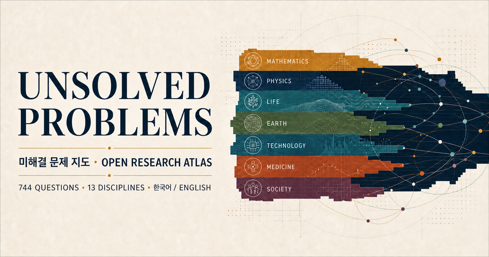

학문 분야
자연과학·수학·공학·의학·인지·사회과학의 13개 대분야와 각 세부분야
OPEN RESEARCH ATLAS · 2026
수학에서 사회 복잡계까지. 난제를 학문명만으로 나열하지 않고, 무엇이 부족한지—이론, 실험, 측정, 확장, 혹은 법칙이 정한 경계인지—여러 축으로 함께 봅니다.

LANDSCAPE
막대는 근거를 확인해 수록한 질문의 범위이며 분야의 중요도 순위가 아닙니다. 선택하면 아래 카탈로그가 같은 조건으로 좁혀집니다.
FIVE AXES
각 축은 서로 독립적입니다. 한 문제를 학문 분야, 해결 방식, 문제 성격, 가능성 경계와 횡단 주제로 함께 볼 수 있습니다.
자연과학·수학·공학·의학·인지·사회과학의 13개 대분야와 각 세부분야
이론 중심, 실험 중심, 이론+실험, 공학·시스템으로 구분합니다.
근본 원리, 예측·모델, 관측·계측, 확장·재현, 설계·시스템, 불가능 경계로 나눕니다.
열린 문제, 현재 기술로 불가능, 현실적 한계, 이론적 불가능을 분리합니다.
에너지, 우주, 양자, 기후, AI, 지속가능성, 건강, 안전·보안으로 학문 간 연결을 찾습니다.
핵심 난제, 로드맵 우선과제, 주요 프런티어와 불가능 경계를 근거 수준에 따라 구분합니다.
CATALOG
전체 항목을 불러오는 중입니다.
검색어를 줄이거나 필터를 초기화해 보세요.
EVIDENCE
각 항목은 학술기관의 대표 난제 목록, 정부·학회의 연구 로드맵, 공식 연구 프로그램과 상금 규정을 근거로 연결합니다.
중요도는 학술기관의 명명 여부, 로드맵 우선순위와 예상 파급력으로 구분합니다. ‘현재 기술로 불가능’은 기술적 한계, ‘이론적 불가능’은 법칙·정리·정보 제약에 따른 경계를 뜻합니다. 출처 연결 검토일: 2026년 8월 7일 · 상금 정보 검토일: 2026년 8월 5일.